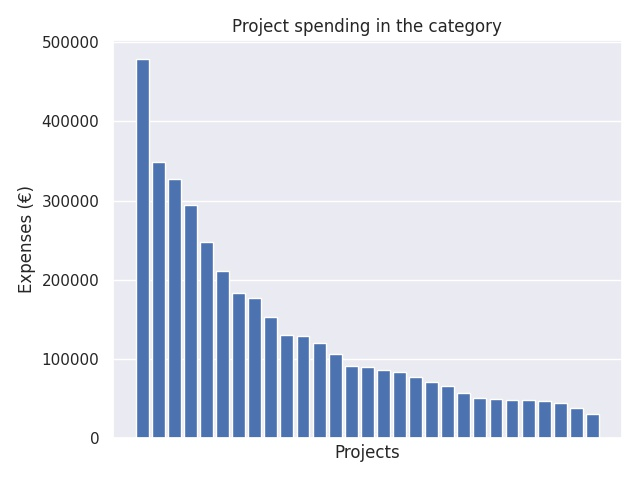

Kärkihanke 1 - hakuryhmä 3: Kokeilu-, kehittämis- ja innovaatiotoiminta
Category summary
134K spent on average
478K highest spending

Reports in the category
Kaarinan kaupunki
Project name: Ihan pihalla! - oppilaat ympäristön tutkijoina
478K spent
Akaan kaupunki
Project name: Digiajan ajattelijat
349K spent
Lappeenrannan kaupunki/ Saimaan mediakeskus
Project name: VISIOT
327K spent
Kuopion kaupunki
Project name: Osaavat opettajat - onnelliset oppijat
294K spent
Oulun yliopisto, Oulun normaalikoulu
Project name: ARVOT - Arvioinnilla oppimisen taitajaksi
248K spent
Helsingin kaupunki, Opetusvirasto
Project name: Inno – innovatiivisten oppimisympäristöjen ja pedagogisen toimintakulttuurin kehittäminen kokeiluilla
212K spent
Espoon kristillisen koulun kannatusyhdistys ry
Project name: Pänttäyksestä printtaukseen - 3D-tulostuksen ja robotiikan uutta pedagogiikkaa perusopetukseen
183K spent
Tampereen kaupunki
Project name: Aivot liikkeelle!
178K spent
Kuopion kaupunki
Project name: Teknoluokilta tulevaisuuden tekijöiksi
153K spent
Turun kaupunki, sivistystoimiala (TOP-keskus)
Project name: Uusi PaikkaOppi
131K spent
Turun kaupunki, sivistystoimiala
Project name: Disco idipsum - yhdessä oppiminen
129K spent
Englantilainen koulu
Project name: Ajattelun kolme ulottuvuutta - 3 Dimensions of Thinking
121K spent
Lapin yliopiston harjoittelukoulu
Project name: weLearn
107K spent
Espoon Steinerkoulun kannatusyhdistys ry
Project name: HyMy - hyvinvoinvoivan ja myötätuntoisen koulukulttuurin kehittmishanke
91.3K spent
Itä-Suomen yliopisto, Joensuun normaalikoulu
Project name: Muuttuvat tilat — Muuttuva pedagogiikka
90.6K spent
Turun yliopisto, Kasvatustieteiden tiedekunta, Turun normaalikoulu
Project name: Educraftory - innostava ja rohkaiseva aktiivisen oppimisen laboratorio
86.3K spent
Närpes stad
Project name: Uppbyggnad av kartläggningsprogram för förberedande undervisning samt integrering efter den förberedande undervisningen
84.1K spent
Nokian kaupunki
Project name: Oppimispolkuja Nokialla
77.8K spent
Grankulla kultur- och utbildningstjänster
Project name: 3D skriver framtiden
71K spent
Lauttasaaren yhteiskoulu
Project name: Monialaiset opinnot ja digitaaliset ympäristöt urheilevan koululaisen hyvinvointia tukemassa
66.5K spent
Kangasalan kunta
Project name: Oppilaiden osallistaminen kolmen TVT-projektin kautta
57.7K spent
Itä-Suomen yliopisto, Joensuun normaalikoulu
Project name: Tieto- ja viestintäteknologian ankkurointia ilmiöpohjaiseen oppimiseen alkuopetuksessa - 1-2 luokan oppilaat oman oppimisen tutkijoina
51K spent
Helsingin Rudolf Steiner -koulun kannatusyhdistys ry
Project name: Puutarhassa opettamisen taitoja opettajille
50.1K spent
Borgå stad
Project name: Mervärde för matematik och modersmål
48.8K spent
Nurmijärven kunta
Project name: Kokeilukulttuuri ja tet 2.0
48.3K spent
Mäntsälän kunta
Project name: Mäntsälän malli-yrittäjyyskasvatuksen polku peruskouluun
46.9K spent
Viipurin Reaalikoulu Oy / Maunulan yhteiskoulu
Project name: Oppimisympäristöt ilman rajoja
44.3K spent
Sodankylän kunta
Project name: Tehdään koulu yhdessä
38.1K spent
Lappeenrannan kaupunki
Project name: Oppilaiden osallisuudesta johtajuuteen
30.4K spent